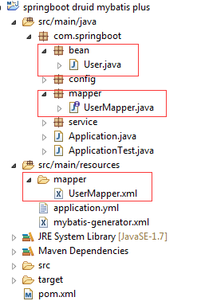
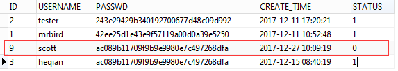

如果项目中使用到了MyBatis框架，那么使用通用Mapper和PageHelper分页插件将极大的简化我们的操作。通用Mapper可以简化对单表的CRUD操作，PageHelper分页插件可以帮我们自动拼接分页SQL，并且可以使用MyBatis Geneator来自动生成实体类，Mapper接口和Mapper xml代码，非常的方便。插件地址及作者链接https://gitee.com/free。
引入依赖
这里使用Spring Boot来构建，可参考Spring-Boot中使用Mybatis.html搭建一个Spring boot + MyBatis的框架，然后在pom中引入：
|
|
接着在pom中配置MyBatis Geneator：
|
|
src/main/resources/mybatis-generator.xml为生成器的配置，下文会介绍到。
配置插件
在Spring Boot配置文件application.yml中配置MyBatis：
|
|
接下来开始配置插件。
配置通用Mapper
在Spring Boot配置文件application.yml中配置通用Mapper：
|
|
关于参数的说明，参考https://gitee.com/free/Mapper/blob/master/wiki/mapper3/2.Integration.md中的可配参数介绍。
除此之外，我们需要定义一个MyMapper接口：
|
|
值得注意的是，该接口不能被扫描到，应该和自己定义的Mapper分开。自己定义的Mapper都需要继承这个接口。
配置PageHelper
在Spring Boot配置文件application.yml中配置通用配置PageHelper：
|
|
参数相关说明参考https://github.com/pagehelper/Mybatis-PageHelper/blob/master/wikis/zh/HowToUse.md中的分页插件参数介绍。
配置Geneator*
在路径src/main/resources/下新建mybatis-generator.xml：
|
|
更详细的说明可参考链接：http://blog.csdn.net/isea533/article/details/42102297。
代码生成
配置好MyBatis Geneator后，在eclipse中运行命令mybatis-generator:generate：

以下为自动成成的代码：
User：
|
|
因为这里数据库试用的是Oracle，其没有主键自动自增的功能，这里先将@GeneratedValue(strategy = GenerationType.IDENTITY)去掉，主键的生成下面会介绍到。生成的主键是BigDecimal类型的，我们将其改为Long类型。
UserMapper：
|
|
UserMapper.xml：
|
|
极其方便的说！
Mapper
要让Spring Boot扫描到Mapper接口，需要在Spring Boot入口类中加入@MapperScan("com.springboot.mapper")注解。
为了获取到Oracle 中序列的值，我们定义一个SeqenceMapper接口：
|
|
因为这里仅介绍Mapper自带的CRUD方法，所以UserMapper接口中无需定义任何方法。
通用Service
我们可以定义一个通用的Service，在其中定义一些通用的方法：
IService：
|
|
其实现类BaseService：
|
|
接下来让UserService接口继承IService接口：
|
|
其实现类UserServiceImpl：
|
|
这样即可在UserService中使用BaseService中的通用方法了。
测试
测试插入：
|
|
运行代码，查看数据库：

测试查询：
|
|
测试删除：
|
|
分页测试，从第二页开始，每页2条数据：
|
|
查看日志打印出的SQL：
|
|
插件已经帮我自动拼接好了。
其他注意事项参考官方说明。源码链接：https://drive.google.com/open?id=1ePz1ihSGSFwNtE_-FWHEG-F5qOJ3dLQi